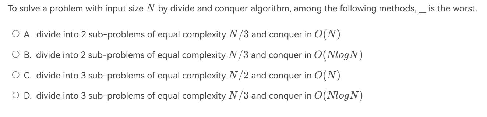

分治法¶
约 1991 个字 9 张图片 预计阅读时间 10 分钟
概念¶
分治法的基本思想是:
-
把一个复杂问题分解为几个小问题
-
递归解决这些子问题，得到解
-
组合解，得到总体的解。
最近点问题¶
一个平面上有N个点。现想要找到距离最近的一对点。
最简单想法¶
遍历每一个组合，共\(\frac{N(N-1)}{2}\)对，时间复杂度为\(O(N^2)\)
分治思想¶
{kind=link}
复杂度思考¶
如果计算交叉部分的最短距离的时间复杂度是线性的话，
然而，如果时间复杂度是平方的话：
因此，我们现在需要重点关注的就是计算交叉部分距离的时间复杂度。
假设在第一二步中，我们得到的最短距离为\(\delta\)，那么在计算中间交叉处的最小值时，不妨先在水平方向上作出约束。因为在这个情况下待求解的点对，必然是分居两侧的。倘若它们的水平距离已经大于\(\delta\),那必然不是我们需要的最短距离。因此作如下划分:
{kind=link}
考虑了水平方向上的限制，为什么我们不考虑竖直方向上的限制呢？加上竖直方向上距离的限制，我们会发现，对于任一点\(p_i\)，与它距离可能小于\(\delta\)的点只会出现在一个\(\delta \times 2\delta\)的 矩形中。更进一步，矩形的左侧与右侧的点还必须满足距离大于等于\(\delta\)的限制(因为在同一边的点相互之间最短的距离为\(\delta\))。在这样的矩形中，最多有8个这样的点(考虑重叠):
{kind=link}
这就意味着，对于每一个待查询点的点，我们查询的次数是常数级的，而所有的带查询点最多也不过是\(O(N)\)量级的，因此我们论证了中间部分的计算是线性时间复杂度，因此根据上面的推导，解决这个问题的时间复杂度是\(O(N\log(N))\)
递归复杂度分析¶
对于分析如下形式的式子的时间复杂度时
我们有三种方法。
有以下两点要注意
- 忽略\(\frac{N}{b}\) 是否为整数
- 认为对于很小的N来说，\(T(N)= \Theta(1)\)
Substitution method(替代法)¶
替代法的思路很简单，我们先通过直觉或者其他什么方法看出可能的时间复杂度是多少，再通过归纳法的手段证明。
例子
以下面这个递推式为例：$$ T(N) = 2T(\lfloor N/2 \rfloor) + N $$
我们猜测
$$ T(N) = O(N \log N) $$
证明: 假设对 $\forall m,m < N $成立, 特别是 $ m = \lfloor N/2 \rfloor $.
因此存在常数 $ c > 0 $ 使得
$$ T(\lfloor N/2 \rfloor) \leq c \lfloor N/2 \rfloor \log \lfloor N/2 \rfloor $$.
代入得：
因此只要c够大，我们就有上式$ \leq cN\log N$,i.e. \(T(N) = O(N \ log N)\)
我们猜测
$$ T(N) = O(N ) $$
证明: 假设对 $\forall m,m < N $成立, 特别是 $ m = \lfloor N/2 \rfloor $.
因此存在常数 $ c > 0 $ 使得
$$ T(\lfloor N/2 \rfloor) \leq c \lfloor N/2 \rfloor$$.
代入得：
错在哪里
假如在 \(T(N) = 2T(\lfloor N/2 \rfloor) + N\)处不直接放缩，而是再往下写一步，得到
这说明了什么？倘若我们一直写下去，就会得到\(T(N) = cN + N \log N\),与猜测是矛盾的。
Recursion-tree method(递归树法)¶
递归树法的思路在于将分割为子问题的过程画成一颗树的情况，更加形象地分析时间复杂度。
数学技巧
在使用递归树法之前，我们必须要知道一个数学等式：
证明
至于如何使用，以PPT上的一个例子来说明
{kind=link}
Master method(主方法)¶
我愿称之为背公式大法。
Definition
设 \(a \geq 1\) 且 \(b > 1\) 为常数，设 \(f(N)\) 为一个函数，并且 \(T(N)\) 在非负整数上由递推关系 \(T(N) = aT(N/b) + f(N)\) 定义。那么我们可以根据\(f(N)\)的情况直接得出\(T(N)\)的时间复杂度。
形式一¶
Info
- 若 \(f(N)=O(N^{(\log_b{a})-\varepsilon}), \text{ 对于某些 }\varepsilon>0\)，那么 \(T(N)=\Theta(N^{\log_b{a}})\)；
- 若 \(f(N)=\Theta(N^{\log_b{a}})\)，那么 \(T(N)=\Theta(N^{\log_b{a}}\log{N})\)；
- 若 \(f(N)=\Omega(N^{(\log_b{a})+\varepsilon}), \text{ 对于某些 }\varepsilon>0\) 且 \(af(\frac{N}{b})<cf(N), \text{ 对于 } c<1 \text{ 与 } \forall N > N_0\)，那么 \(T(N)=\Theta(f(N))\)；
证明¶
首先，使用递归树证明，得到如下图：
{kind=link}
所以我们得到
下面对三种情况展开证明
证明
我们直接考虑\(\sum_{j=0}^{\log_b^n -1} a^jf(\frac{n}{b^j})\) 由于\(f(N)=O(N^{(\log_b{a})-\varepsilon})\)，于是
已知\(f(N)=\Theta(N^{\log_b{a}})\)。 则
\(f(N)=\Omega(N^{(\log_b{a})+\varepsilon}), \text{ 对于某些 }\varepsilon>0\) 且 \(af(\frac{N}{b})<cf(N), \text{ 对于 } c<1 \text{ 与 } \forall N > N_0\)
引理
应用引理，我们有：
而由于 \(c<1\)，所以 \(\log_b{c} < 0\)；而 \(N > 0,\text{而且通常也大于}1\)，所以 \(N^{\log_b{c}} \in (0,1)\)。因此，对于确定的 \(c\)，我们有 \(\frac{1-N^{\log_b{c}}}{1-c} \in \left(0, \frac{1}{1-c}\right)\)；
因此，上式便能改变为：
回想\(f(N)=\Omega(N^{(\log_b{a})+\varepsilon})\),因此我们可以看出\(T(N) = O(f(N))\)
另外有
由此得到 \(T(N) = \Omega(f(N))\)，最终证得 \(T(N) = \Theta(f(N))\)
形式二¶
Info
- 若 \(af(\frac{N}{b}) = \kappa f(N) \text{ 对于确定的 } \kappa < 1\)，那么 \(T(N) = \Theta(f(N))\)
- 若 \(af(\frac{N}{b}) = K f(N) \text{ 对于确定的 } K > 1\)，那么 \(T(N) = \Theta(N^{\log_b{a}})\)
- 若 \(af(\frac{N}{b}) = f(N)\)，那么 \(T(N) = \Theta(f(N) \log_b N)\)
形式三¶
Info
特别的，若\(T(N)\)满足
其复杂度的结论为：
例题¶
例题
{kind=link}
解析
a=8,b=3,\(f(N) = O(N^2 \log N)\),\(a \lt b^k\)，所以可以得出选A。
 考虑主方法
{kind=link}
解析
A，\(T(N)=2T(N/3)+O(N)\)，则 \(N^{\log_ba}=N^{\log_32}<N\)，\(T=O(N)\)
B，\(T(N)=2T(N/3)+O(N\log N)\)，则 \(N^{\log_ba}=N^{\log_32}<N<N\log N\)，\(T=O(N\log N)\)
C，\(T(N)=3T(N/2)+O(N)\)，则 \(N^{\log_ba}=N^{\log_23}>N\)，\(T=O(N^{\log_23})\)
D，\(T(N)=3T(N/3)+O(N\log N)\)，则 \(N^{\log_ba}=N\)，\(T=O(N\log^2 N)\)
故选C。
{kind=link}
解析
\(a=3,b=3,f(N)=N\),由主函数形式一可知，\(T(N)=\Theta(N^{\log_b^a}\log N)=\Theta(N\log N)\)
{kind=link}
解析
不妨考虑\(n^{\frac{1}{2^k}}\)是某一常数，则\(k = \log \log n\)
则\(T(n) = O(\log n + \log \log n \log n)=O(\log \log n \log n)\)